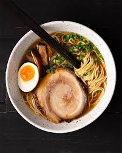
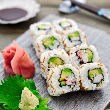
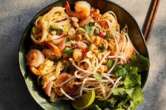

Healthy Foods

Indian Butter Chicken
- 1/3 c. plain whole-milk yogurt
- 2 cloves garlic, grated or finely chopped
- 1 Tbsp. fresh lemon juice
- 1 Tbsp. garam masala
- 1 Tbsp. grated or finely chopped peeled ginger

Homemade Shoyu Ramen
- 8 c. low-sodium chicken broth
- 16 dried shiitake mushrooms
- 30 g kombu (kelp), about a 10" square piece
- 20 g dried bonito flakes (about 2 c. loosely packed)
- 4 cold large eggs
- 2 1/2 c. reserved chashu-tare liquid

California Roll
- 1 c. sushi rice
- 1 1/2 Tbsp. rice vinegar
- 1 Tbsp. granulated sugar
- 1 1/2 tsp. kosher salt
- water
- 4 sheets nori

Pad Thai
- 8 oz. rice noodles, broken in half
- 6 Tbsp. peanut or vegetable oil, divided
- 1 lb. medium shrimp, peeled, deveined, tails removed
- 3 large eggs
- 3 Tbsp. palm sugar
- 3 Tbsp. Thai fish sauce